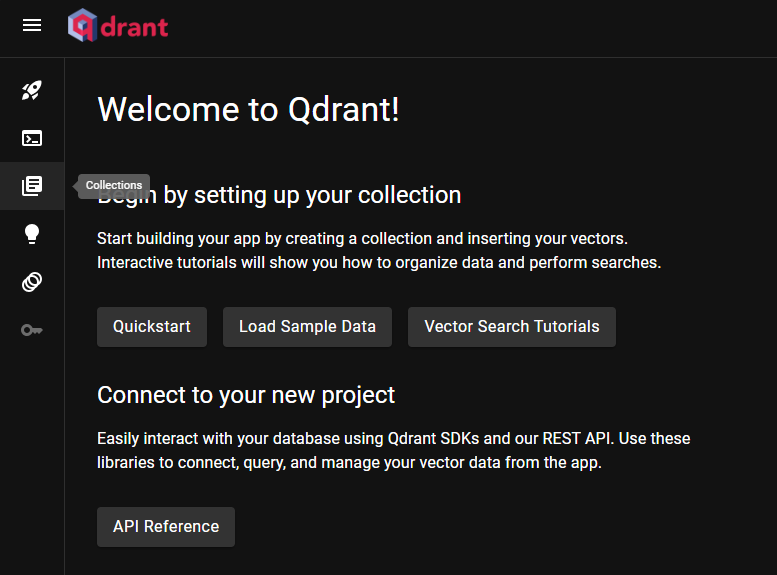

鄉下人的質樸 n8n 自動化AI工作流實踐
歡迎來到我的 n8n 教學頁面。這裡將會從一個純樸鄉下人的角度介紹 n8n 相關的實用但不炫酷的教學內容，從基礎設定到進階的在地化部署，帶您一步步打造專屬於您的 AI 自動化流程。
基礎系列 (Supabase 雲端整合)
本系列將帶您從零開始，學習 n8n 的基本操作，並整合 Supabase 雲端向量資料庫與 Gemini AI。完成後，您將擁有一個能透過雲端知識庫回答問題的基礎 RAG (檢索增強生成) 應用。


進階系列：在地化部署 (Qdrant)
本系列專為重視資料隱私與自主性的使用者設計。我們將學習如何在本地環境安裝並設定 Qdrant 向量資料庫，並將先前的工作流無縫對接到這個私有化知識庫，實現一個完全由您掌控的 RAG 應用。

n8n 教學 (七)：在 Qdrant 中建立您的第一個向量資料庫
本篇將帶您實際操作 Qdrant Web UI，建立一個 Collection 並設定向量維度，完成您的第一個在地向量資料庫。
查看詳情